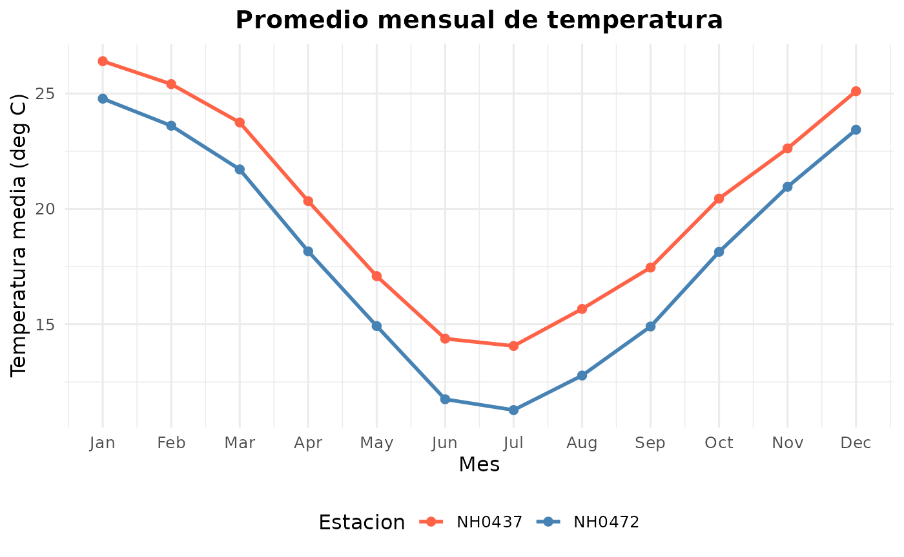
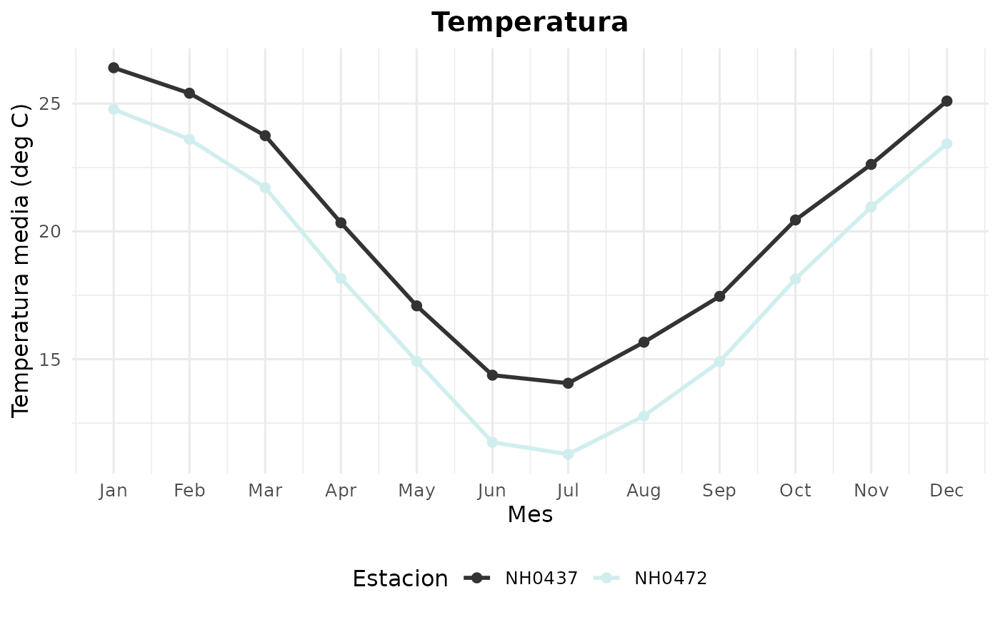

Introducción
El paquete metzara permite descargar,
leer, analizar y visualizar datos de estaciones meteorológicas de
Argentina.
En esta viñeta se muestra cómo utilizar sus funciones principales:
-
leer_estacion(): descarga y lee los datos de una estación específica.
-
tabla_resumen_temperatura(): genera un resumen estadístico de la temperatura por estación.
-
grafico_temperatura_mensual(): crea un gráfico del promedio mensual de temperatura para una o varias estaciones.
1. Cargar el paquete
library(metzara)
library(dplyr)
#>
#> Attaching package: 'dplyr'
#> The following objects are masked from 'package:stats':
#>
#> filter, lag
#> The following objects are masked from 'package:base':
#>
#> intersect, setdiff, setequal, union
library(ggplot2)
library(tidyverse)
#> ── Attaching core tidyverse packages ──────────────────────── tidyverse 2.0.0 ──
#> ✔ forcats 1.0.1 ✔ stringr 1.5.2
#> ✔ lubridate 1.9.4 ✔ tibble 3.3.0
#> ✔ purrr 1.1.0 ✔ tidyr 1.3.1
#> ✔ readr 2.1.5
#> ── Conflicts ────────────────────────────────────────── tidyverse_conflicts() ──
#> ✖ dplyr::filter() masks stats::filter()
#> ✖ dplyr::lag() masks stats::lag()
#> ℹ Use the conflicted package (<http://conflicted.r-lib.org/>) to force all conflicts to become errors2. Lectura de datos de una estación
La función leer_estacion() descarga los datos de una
estación determinada y los guarda localmente en la carpeta
datos/.
Luego los lee como un data.frame o tibble.
# Ejemplo: leer la estación NH0472
datos_NH0472 <- leer_estacion("estacion_NH0472", "datos/estacion_NH0472.csv")
#> El archivo ya existe en la ruta indicada. Leyendo archivo
#> 'datos/estacion_NH0472.csv'...
#> Lectura completada. El dataset de la estacion estacion_NH0472 tiene 20425 filas
#> y 35 columnas.
# Visualizamos las primeras filas
head(datos_NH0472, 5)
#> # A tibble: 5 × 35
#> id fecha temperatura_abrigo_150cm temperatura_abrigo_150cm_maxima
#> <chr> <date> <dbl> <dbl>
#> 1 NH0472 1961-07-01 11.1 13.4
#> 2 NH0472 1961-07-02 5.5 10.5
#> 3 NH0472 1961-07-03 6 10.8
#> 4 NH0472 1961-07-04 NA NA
#> 5 NH0472 1961-07-05 12.4 14.8
#> # ℹ 31 more variables: temperatura_abrigo_150cm_minima <dbl>,
#> # temperatura_intemperie_5cm_minima <dbl>,
#> # temperatura_intemperie_50cm_minima <dbl>,
#> # temperatura_suelo_5cm_media <lgl>, temperatura_suelo_10cm_media <lgl>,
#> # temperatura_inte_5cm <lgl>, temperatura_intemperie_150cm_minima <lgl>,
#> # humedad_suelo <lgl>, precipitacion_pluviometrica <dbl>, granizo <dbl>,
#> # nieve <dbl>, heliofania_efectiva <dbl>, heliofania_relativa <dbl>, …3. Generar una tabla resumen de temperatura
La función tabla_resumen_temperatura() permite obtener
estadísticas básicas (media, desviación estándar, máxima y mínima) de la
temperatura de abrigo a 150 cm para una o más estaciones.
resumen <- tabla_resumen_temperatura(c("estacion_NH0437", "estacion_NH0472", "estacion_NH0098"))
#> El archivo ya existe en la ruta indicada. Leyendo archivo
#> 'datos/estacion_NH0437.csv'...
#> Lectura completada. El dataset de la estacion estacion_NH0437 tiene 18929 filas
#> y 35 columnas.
#> El archivo ya existe en la ruta indicada. Leyendo archivo
#> 'datos/estacion_NH0472.csv'...
#> Lectura completada. El dataset de la estacion estacion_NH0472 tiene 20425 filas
#> y 35 columnas.
#> El archivo ya existe en la ruta indicada. Leyendo archivo
#> 'datos/estacion_NH0098.csv'...
#> Lectura completada. El dataset de la estacion estacion_NH0098 tiene 23733 filas
#> y 35 columnas.
#> Tabla resumen de temperatura generada para 3 estacion(es).
resumen
#> # A tibble: 6 × 5
#> id Media Desviacion_Estandar Tipo Temperatura
#> <chr> <dbl> <dbl> <chr> <dbl>
#> 1 estacion_NH0098 18.6 5.98 Maxima 37.4
#> 2 estacion_NH0098 18.6 5.98 Minima -17.4
#> 3 estacion_NH0437 20.2 5.77 Maxima 36.3
#> 4 estacion_NH0437 20.2 5.77 Minima 2.1
#> 5 estacion_NH0472 18.0 5.94 Maxima 34.8
#> 6 estacion_NH0472 18.0 5.94 Minima 0.55El resultado está en formato largo (long format), lo que facilita la
visualización posterior con ggplot2.
4. Generar un gráfico del promedio mensual de temperatura
Podemos unir varios datasets y luego graficar la temperatura promedio
mensual usando grafico_temperatura_mensual().
# Leemos varias estaciones
todas_las_estaciones <- bind_rows(
leer_estacion("estacion_NH0437", "datos/estacion_NH0437.csv"),
leer_estacion("estacion_NH0472", "datos/estacion_NH0472.csv")
)
#> El archivo ya existe en la ruta indicada. Leyendo archivo
#> 'datos/estacion_NH0437.csv'...
#> Lectura completada. El dataset de la estacion estacion_NH0437 tiene 18929 filas
#> y 35 columnas.
#> El archivo ya existe en la ruta indicada. Leyendo archivo
#> 'datos/estacion_NH0472.csv'...
#> Lectura completada. El dataset de la estacion estacion_NH0472 tiene 20425 filas
#> y 35 columnas.
# Gráfico con colores definidos manualmente
grafico_temperatura_mensual(
todas_las_estaciones,
colores = c("tomato", "steelblue"),
titulo = "Promedio mensual de temperatura"
)
#> Grafico generado correctamente.
O, si preferís que los colores se generen automáticamente:
grafico_temperatura_mensual(todas_las_estaciones)
#> No se especificaron colores. Se eligieron 2 colores aleatorios.
#> Grafico generado correctamente.
5. Conclusión
El paquete meteorodata facilita la obtención y análisis
de información climática histórica.
Sus funciones permiten automatizar el proceso de descarga, limpieza y
visualización de datos meteorológicos, generando resultados
reproducibles y visualmente claros.
Autores:
Ezequiel Piseri y Kiara Manacasa
Fecha: 2025-11-02